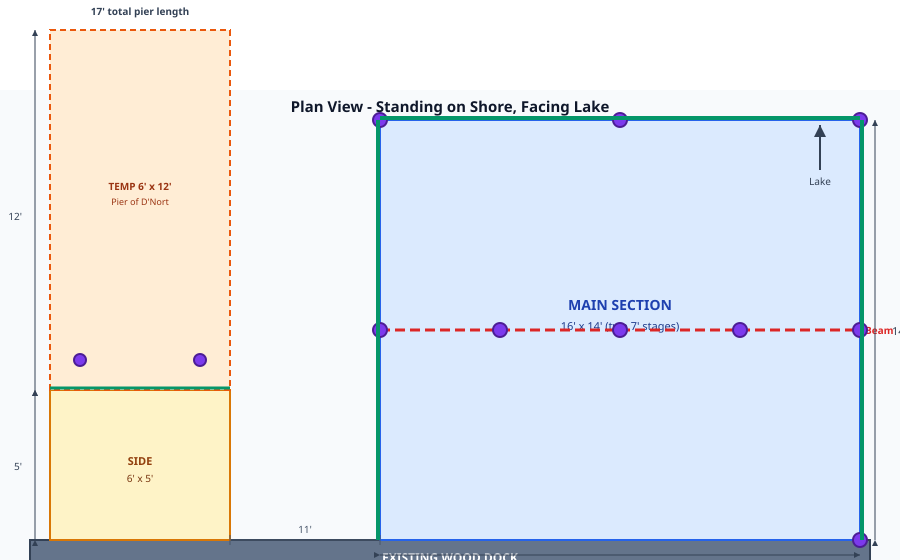
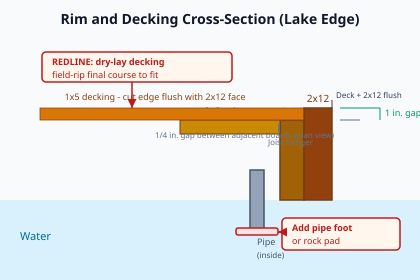

Dock Build Plan
16′ × 14′ main · 6′ × 5′ side platform · 17′ total pier · Pier of D'Nort temp section
Summary
16′ × 14′Main section
6′ × 5′Side platform
17′Total pier
11Pipe pilings
Main section
- Two 7′ stages; mid-span doubled 2×10 beam at 7′ from shore
- Shore edge bolted through to existing wood dock after field inspection (~24″ OC)
- 2×10 rim + 2×12 face on lake, left, right (full span)
- 2×6 stringers @ 16″ OC on joist hangers; 7′ span
- 1×5 decking flat (1″ × 5.375″), 16′ boards along shore, ¼″ gap
- 9 pipe pilings (2.5″ or 3″ Sch 40) inside frame
Side platform & temp pier
- ~11′ left of main section (facing lake)
- 2 pilings, 1′ in from lake edge
- Doubled 2×10 face plate at lake end (Pier of D'Nort bolts)
- Temp section: 6′ × 12′ → 5′ fixed + 12′ temp = 17′ pier
- Eleven 6′ deck courses require 6 boards from 16′ stock
- Deck screws: 2 per stringer crossing (900 total order)
Contractor Redlines
- Permit/exemption: Verify APA, NYSDEC, and local requirements in writing before material purchase.
- Decking fit: Preserve the 16′ × 14′ main and 6′ × 5′ side footprints; dry-lay with ¼″ gaps and field-rip final courses.
- Side decking order: Use 6 × 16′ boards for eleven 6′ cuts; five boards only yield ten cuts.
- Pipe stability: Field-add diagonal bracing or tension straps at pipe-supported bays, especially lake edge, side platform, and mid-span beam.
- Rock bearing: Use pipe feet, rock pads, or approved anti-skate bases on rocky bearing points.
- Existing dock tie-in: Probe shore framing before bolting; add supplemental support if framing is soft or deflecting.
- Winter/ice plan: Confirm fixed-section winter strategy, adjustable pipe clamps, and temp pier removal/securement.
- Connectors: Use rated hanger nails or structural connector screws; deck screws are for decking only.
Blueprint — Plan View

Blueprint — Rim & Decking

Piling layout — main section
| # | Location | Coords (x, y)* |
|---|---|---|
| P1 | Right shore corner | (16, 0) |
| P2 | Right edge, mid (beam) | (16, 7) |
| P3 | Right lake corner | (16, 14) |
| P4 | Lake edge, center | (8, 14) |
| P5 | Lake left corner | (0, 14) |
| P6 | Left edge, center (beam) | (0, 7) |
| P7 | Beam interior | (4, 7) |
| P8 | Beam interior, center | (8, 7) |
| P9 | Beam interior | (12, 7) |
* x = feet from left shore corner; y = feet from shore. Shore edge: no pilings except P1 at right corner.
Side platform: 2 pilings at ~1.5′ and 4.5′ from left, 1′ in from lake edge.
Materials — Ordering List
Order lumber in 16′ lengths where noted. Pitch for decking: 5.375″ board + ¼″ gap = 5.625″/row → 30 rows (main) + 11 rows (side), with final courses field-ripped to fit.
| Item | Main | Side | Total order | Notes |
|---|---|---|---|---|
| 2×10 PT | 6 | 2 | 8 × 16′ | Beam + face plate |
| 2×12 PT | 3 | — | 3 × 16′ | 7+7 cuts, lake full |
| 2×6 PT | 12 | 2 | 14 × 16′ | 7+7 or 5′ cuts |
| 1×5 PT decking | 30 | 6 | 36 × 16′ | 11 × 6′ side cuts + spare |
| Joist hangers (2×6, galv.) | 48 | 10 | 58 | |
| Outside corner brackets | 4 | 2 | 6 | |
| Inside corner brackets | 4 | 2 | 6 | |
| Inside pipe holders | 9 | 2 | 11 | 2.5″ or 3″ ID |
| Galv. pipe Sch 40 | 9 | 2 | 11 | 8′/10′/12′ mix |
| ½″ carriage bolts | 70 | 16 | 86 | 4″–10″ assorted |
| Fender washers | 40 | 10 | 50 | |
| Deck screws #10×3″ | 780 | 110 | 900 | 2 per crossing |
| Dock rings | 4–6 | 2 | 6–8 | |
| Lag screws ½″×4″ | 20 | 8 | 28 | |
| End-grain sealer | 1 gal | — | 1 gal |
16′ cut plan — 2×10
| Boards | Cuts |
|---|---|
| 1–2 | Left & right rim: 7′ + 7′ + 2′ off |
| 3 | Lake rim: 16′ |
| 4 | Shore rim: 16′ |
| 5–6 | Mid-span beam: 16′ + 16′ |
| 7 | Side: 5′ + 5′ + 6′ |
| 8 | Side face: 6′ + 6′ + 4′ off |
Construction Checklist
Stage 1 — Shore half (16′ × 7′)
- Probe existing shore framing; frame shore 7′ section and bolt to sound dock framing (~24″ OC)
- Install P1 piling at right shore corner
- Laminate mid-span beam (2× 2×10 × 16′); mount pipe collars
- Hang 2×6 stringers (7′) @ 16″ OC on galv. hangers
- Install 2×12 face plates + inner/outer corner brackets
- Deck stage 1: 1×5 × 16′, ¼″ gaps, 2 screws/crossing; field-rip final course as needed; seal cut ends
Stage 2 — Lake half (16′ × 7′)
- Frame lake section from stage 1 platform
- Set perimeter pilings P2, P3, P4, P5
- Set beam pilings P6–P9
- Complete stringers, lake 2×12, corner brackets
- Deck stage 2; maintain ¼″ gap alignment and ripped/fitted final course line
Side platform & temp pier
- Frame 6′ × 5′; 2×6 stringers @ 16″ OC
- Install 2 pilings (1′ in from lake edge)
- Doubled 2×10 face plate; bolt Pier of D'Nort hardware
- Deck: 11 × 6′ boards from 6 × 16′ stock; field-rip final course to hold 5′ depth
- Attach 6′ × 12′ temp section → 17′ total pier
Pipe lengths (field-cut)
| Water depth | Approx. pipe |
|---|---|
| 4′ | 7′ |
| 6′ | 9′ |
| 8′ | 11′ |
Depth + frame height + ~6″ on rocky bottom. Water depth 4′–8′ across main section. Use bearing pads/feet where pipes land on rock.